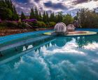
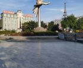
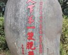
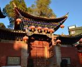
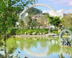
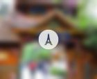
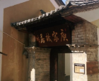

介绍
普洱市墨江哈尼族自治县位于北纬22度51分-23度59分，东经101度07分-102度04分之间，北回归线从县城穿过。北回归线标志园建于1997年，占地1500平方米，融天文、地理、植物及科普知识和园林艺术、旅游文化为一体。
北回归线标志园以公元2038年北回归线的位置（北纬23度26分）为主轴线，截北回归线上500米地段，间以“太阳之路”、“夸父追日”、“北回归线之门”、“日晷广场”、“春夏秋冬”等建筑小品，雕塑以及主体标志，创找了一个形象生动的空间系列，以科普博物馆表达对自然、生命、阳光的理解，并通过技术手段精确地展示北回归线的地理位置及变化，每年夏至均可在此“捕捉”到北回归线的身影。沿着北回归线可在园内顺势依山漫游，这里道路曲折蜿蜒，绿树成荫，蝉鸣林间，鸟语枝头，园内设置有茶室、幼儿场所、休息亭、饮食部、小商品市场、综合服务部等。游客在欣赏建筑、雕塑、园林艺术及获得科普知识的同时，还可品尝到普洱名茶、墨江美酒。。
开放时间
全年 08:30-18:30
优待政策
补充说明：1、A.免费政策：1.2米（不含）以下儿童免票；70岁（含）以上老人凭老人证免费，现役军人持军官证免票,残疾人持有效证件免票。 B.优惠政策：学生凭证购学生票，60岁（含）以上老人凭优待证享受优惠价格。（上述优惠政策，需到景区自行购买。）
服务设施
停车场：【北回归线标志园停车场】参考价格：收费；地址：云南普洱墨江北回归线标志园门口；库位：500：
附近景点

墨江北回归线标志园露营地
直线距离 < 100m

太阳广场
4.6分
直线距离692m

双胞胎井
直线距离914m

墨江文庙
4.3分
直线距离1.1km

双胞文化园
直线距离1.9km

癸能村
3.9分
直线距离7.1km

庾恩旸故居
直线距离7.5km